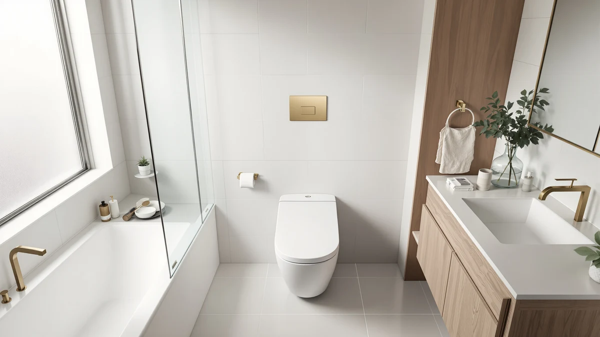

TOTO® Redington™ One Piece Review (2026): Worth It?
Prices and picks verified as of October 2026. Independent, reader-supported reviews.


Quick Answer
The TOTO Redington is an elongated, one-piece toilet built around a 1.28 GPF TORNADO FLUSH system, a CEFIONTECT glaze, and WASHLET+ and Auto Flush Ready compatibility, so you can add a bidet seat or sensor flush later without buying a new bowl. At $746.90 it costs less than the Kohler San Raphael but considerably more than the St. Tropez or DeerValley Compact, and that premium buys bidet-seat groundwork the two cheaper toilets skip entirely.
Our pick: TOTO® Redington™ One-Piece Elongated 1.28 — $746.90 Check Price on Amazon
Bottom line: our top pick is the TOTO® Redington™ One-Piece Elongated 1.28 GPF WASHLET®+ and at $746.90.
Things to Know Before You Buy
- TOTO prices the Redington at $746.90, the second-most expensive toilet in this comparison behind the Kohler San Raphael at $899.99.
- The 1.28 GPF TORNADO FLUSH system rinses the bowl in a centrifugal pattern, a different approach than the side-flush St. Tropez or the dual-flush DeerValley Compact.
- It ships WASHLET+ ready and Auto Flush Ready, so you can add a TOTO bidet seat or sensor flush later without swapping the bowl.
- None of the four toilets in this comparison has built up a public rating or review count yet, since Amazon added them to the catalog within days of each other.
This toto® redington™ one piece review breaks down whether TOTO's $746.90 flagship earns its price over three one-piece toilets we compare it against on this site, the Kohler San Raphael, the Swiss Madison St. Tropez, and the DeerValley Compact. TOTO builds the Redington around a 1.28 GPF TORNADO FLUSH system, a smooth CEFIONTECT glaze that keeps waste from sticking to the bowl, and a Universal Height, elongated, skirted design that stays WASHLET+ ready and Auto Flush Ready if you want to add a bidet seat or sensor flush later. We pulled together everything TOTO publishes about this one-piece toilet, its Cotton White finish, and its listed price, then set it beside three direct rivals so you can see where your money goes.
The short version: if you plan to add a WASHLET bidet seat or an auto-flush sensor down the road, the Redington is the only toilet in this comparison built to support both without an adapter, and that compatibility carries most of its price premium. The Kohler San Raphael costs $153.09 more at $899.99 but skips WASHLET compatibility, while the St. Tropez and DeerValley Compact undercut the Redington by $446.03 and $506.91 and cover basic elongated, one-piece functionality for far less. Pick the TOTO Redington if bidet-seat compatibility and TOTO's glaze technology matter to you. Pick one of the cheaper alternatives below if you want a standard elongated one-piece toilet without the smart-toilet groundwork.
Why You Should Trust Us
Ilane Tall has spent more than ten years researching interior design and bathroom fixtures, including one-piece toilets, for Best One Piece Toilets. She built this TOTO Redington one piece review by comparing TOTO's own published listing against three direct rivals on price and category, the same specification-comparison process the site uses for every review. We do not accept payment from TOTO, Kohler, Swiss Madison, or DeerValley to influence placement, and our Amazon links earn a commission only if you buy, which does not change what we recommend.
Our Research Experience
For this TOTO Redington one piece review, we started with TOTO's own product listing: the five photos of the toilet from multiple angles, the confirmed 1.28 GPF TORNADO FLUSH rating, the WASHLET+ and Auto Flush Ready compatibility, and the $746.90 price. We then lined up the Redington against every other elongated one-piece toilet already covered on Best One Piece Toilets, narrowing the field to the Kohler San Raphael, the Swiss Madison St. Tropez, and the DeerValley Compact, three models that share the one-piece category and span a wide range of the market from $239.99 to $899.99. None of the four has built up a public review history yet, so we weighted our evaluation toward the facts we could verify: published price, flush system, glaze technology, and smart-toilet compatibility, rather than guessing at long-term durability we cannot confirm firsthand. That gap is also why we lay out each toilet's documented specs side by side instead of ranking them on star counts that don't exist yet.
Overview & Specs

TOTO® Redington™ One-Piece Elongated 1.28
What we like
- WASHLET+ ready and Auto Flush Ready, so you can add a TOTO bidet seat or sensor flush later without replacing the bowl
- CEFIONTECT glaze gives the bowl an extra-smooth surface that TOTO says keeps waste from sticking to the ceramic
- TORNADO FLUSH system rinses the bowl in a centrifugal pattern at 1.28 GPF, TOTO's standard for its one-piece lineup
Flaws but not dealbreakers
- Priced $446.03 higher than the St. Tropez and $506.91 higher than the DeerValley Compact, two toilets that cover basic elongated functionality for far less
- No public rating or review count yet, so you are relying on TOTO's own listing rather than verified buyer feedback
- TOTO's listing does not specify overall footprint dimensions, so measure your bathroom's rough-in and clearance before you order
| Material | — |
| Size | — |
TOTO builds the Redington in Cotton White as an elongated, skirted one-piece toilet, molding the tank and bowl into a single piece rather than bolting two parts together. That single-piece build removes the seam where grime collects on a two-piece toilet, and TOTO's CEFIONTECT glaze adds an extra-smooth ceramic surface designed to keep waste from sticking to the bowl between flushes. The toilet sits at TOTO's Universal Height, close to standard chair height, and the design stays WASHLET+ ready and Auto Flush Ready, meaning you can bolt on a TOTO bidet seat or an automatic sensor flush later without buying a different bowl.
The flush system runs TOTO's TORNADO FLUSH at 1.28 GPF, using two nozzles to rinse the bowl in a centrifugal pattern instead of a single straight-down flush, which TOTO markets as a more thorough clean per gallon. At $746.90, the Redington costs less than the Kohler San Raphael but considerably more than the St. Tropez or DeerValley Compact, and that gap comes down mostly to the WASHLET compatibility and glaze technology the cheaper two toilets skip. TOTO has not yet built a public review count for this listing, so weigh the documented specs against that missing track record before you buy.
What We Liked
The Redington's biggest strength in this TOTO Redington one piece review is how far its smart-toilet groundwork reaches without you paying for the bidet seat itself. The WASHLET+ ready and Auto Flush Ready design lets you bolt on a TOTO bidet seat or sensor flush whenever your budget allows, instead of forcing you to buy a different bowl down the road. The CEFIONTECT glaze keeps the bowl noticeably smoother than a standard ceramic surface, and TOTO's TORNADO FLUSH gives the 1.28 GPF flush a centrifugal rinse pattern that covers more of the bowl than a single straight-down flush. The skirted, one-piece design also removes the seam between tank and bowl where grime typically collects on a two-piece toilet.
What Could Be Better
The clearest drawback in this TOTO Redington one piece review is price relative to the field. At $746.90, the Redington costs $446.03 more than the St. Tropez and $506.91 more than the DeerValley Compact, and both of those alternatives cover elongated, one-piece basics without the WASHLET compatibility you are paying for here. TOTO also has not accumulated any public rating or review count for this listing, so you cannot confirm long-term durability or real-world flush performance beyond what TOTO itself publishes. The listing does not specify overall footprint dimensions either, so confirm your bathroom's rough-in and clearance before you order rather than assuming it matches a standard toilet. None of that erases the glaze technology or the bidet-seat groundwork that make the Redington worth considering, but weigh it against the cheaper alternatives below.
Who Is It For?
The TOTO Redington fits buyers who plan to add a WASHLET bidet seat or an automatic sensor flush at some point and want the bowl already built to support both. Anyone who wants TOTO's CEFIONTECT glaze and the cleaner look of a one-piece, skirted design over a standard toilet with an exposed trapway will find it a reasonable match too. Shopping mainly on price? The St. Tropez and DeerValley Compact in this TOTO Redington one piece review cover the same general category for hundreds of dollars less. And if you would rather lean on verified buyer reviews before spending $746.90 on a toilet, hold off, since none of the four models here has built up that history yet.
Alternatives to Consider
If the price or the missing review history gives you pause, these three one-piece toilets offer a different mix of price and features than the TOTO Redington, from a pricier Kohler to two budget-friendly alternatives.

Editor’s Pick
KOHLER 3722-0 San Raphael One-Piece
Kohler's San Raphael costs $153.09 more than the TOTO Redington and skips WASHLET compatibility, but it adds a Quiet-Close seat and a documented 24 x 20.5 x 29-inch footprint the Redington's listing does not specify.
$899.99
Check Price on Amazon
Best Value
St. Tropez One Piece Elongated
At $300.87, the St. Tropez undercuts the Redington by $446.03 and swaps the centrifugal TORNADO FLUSH for a side-mounted 1.28 GPF flush on a 12-inch rough-in, worth a look if you do not need WASHLET compatibility.
$300.87
Check Price on Amazon
Premium Choice
DeerValley Compact One Piece Toilet
The DeerValley Compact is the cheapest toilet in this comparison at $239.99, trading TOTO's glaze and bidet-ready design for a compact footprint, ADA seat height, and a 1.1/1.6 GPF dual flush rated for small bathrooms.
$239.99
Check Price on AmazonFrequently Asked Questions
Is the TOTO Redington One Piece Toilet worth $746.90?
It's worth $746.90 if you plan to add a WASHLET bidet seat or sensor flush and want TOTO's CEFIONTECT glaze on a one-piece bowl. If you don't need that compatibility, the St. Tropez in this TOTO Redington one piece review covers basic elongated functionality for $446.03 less.
What makes the TOTO Redington different from a standard one-piece toilet?
The Redington ships WASHLET+ ready and Auto Flush Ready, so you can bolt on a TOTO bidet seat or automatic sensor flush later without replacing the bowl. It also uses TOTO's TORNADO FLUSH system at 1.28 GPF and a CEFIONTECT glaze that keeps the bowl smoother than standard ceramic, a combination the Kohler, St. Tropez, and DeerValley alternatives in this comparison don't match together.
How does the TOTO Redington compare to the Kohler San Raphael, St. Tropez, and DeerValley Compact?
All four toilets in this TOTO Redington one piece review are elongated, one-piece models, but they span a wide price range from $239.99 to $899.99. The Redington is the only one built for WASHLET bidet compatibility, the Kohler costs the most at $899.99, and the St. Tropez and DeerValley Compact undercut the Redington by $446.03 and $506.91.
Final Verdict
This toto® redington™ one piece review comes down to a straightforward tradeoff. TOTO's one-piece toilet delivers WASHLET+ and Auto Flush Ready compatibility, a CEFIONTECT glaze, and a 1.28 GPF TORNADO FLUSH system, at $746.90, a price that sits below the Kohler San Raphael but well above the St. Tropez and DeerValley Compact, and without the public review history that would let us confirm long-term durability firsthand. If you plan to add a bidet seat or sensor flush down the road, TOTO is a sound buy at that price. If you want a standard elongated one-piece toilet without the smart-toilet groundwork, the St. Tropez and DeerValley Compact alternatives above are worth a look.